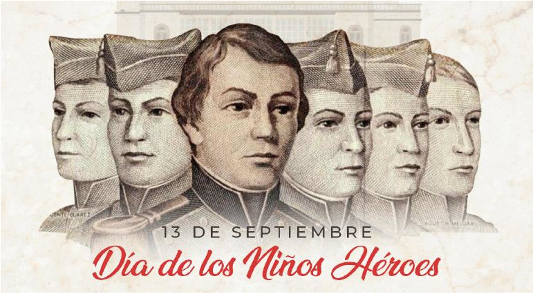
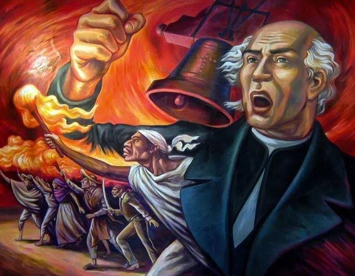
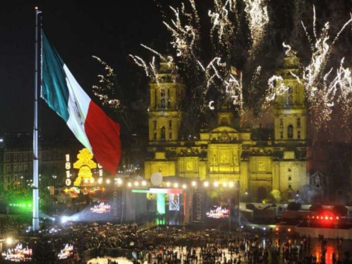
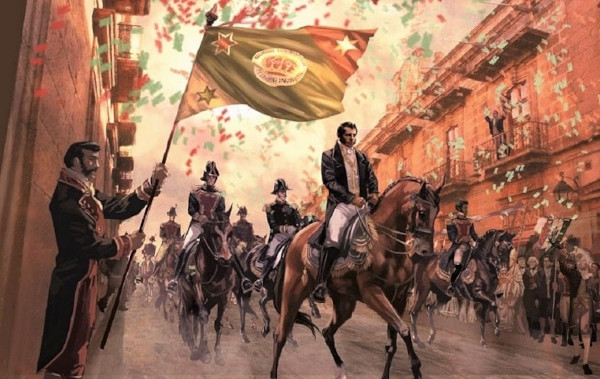
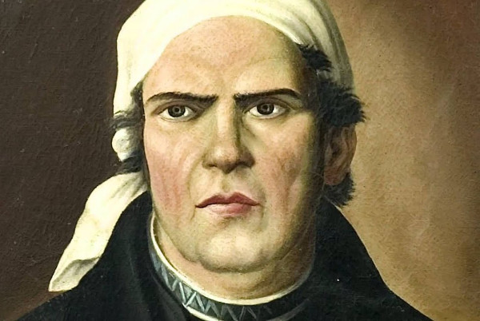

Línea del Tiempo de Septiembre
Gesta Heroica de los Niños Héroes
Durante la intervención estadounidense, cadetes del Colegio Militar defendieron con su vida el Castillo de Chapultepec frente a las tropas invasoras. Destacan los nombres de Juan de la Barrera, Agustín Melgar, Francisco Márquez, Fernando Montes de Oca, Vicente Suárez y Juan Escutia.

Noche del Grito de Independencia
Tradición popular y ceremonial donde el Cura Miguel Hidalgo y Costilla llamó al pueblo de Dolores, Guanajuato, a levantarse en armas contra el dominio español. Hoy en día, la noche del 15 de septiembre autoridades de todos los niveles replican el "Grito" desde los balcones oficiales.

Inicio de la Guerra de Independencia
Fecha formal en que arranca el movimiento insurgente armado de México. Es día festivo oficial e históricamente se conmemora con un desfile militar a lo largo del país para honrar el inicio de la lucha por la soberanía.

Consumación de la Independencia
Tras 11 años de lucha, el Ejército Trigarante —encabezado por Agustín de Iturbide y Vicente Guerrero— entra triunfante a la Ciudad de México, firmando al día siguiente el Acta de Independencia del Imperio Mexicano.

Nacimiento de José María Morelos y Pavón
Nacimiento del "Siervo de la Nación" en Valladolid (hoy Morelia). Caudillo clave de la segunda etapa de la Independencia, autor de los Sentimientos de la Nación y organizador del Congreso de Anáhuac.
